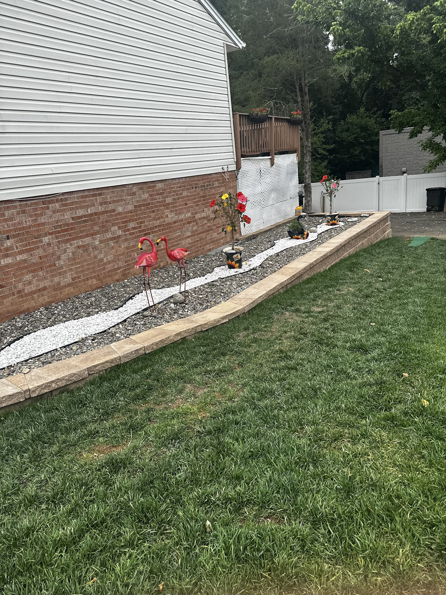
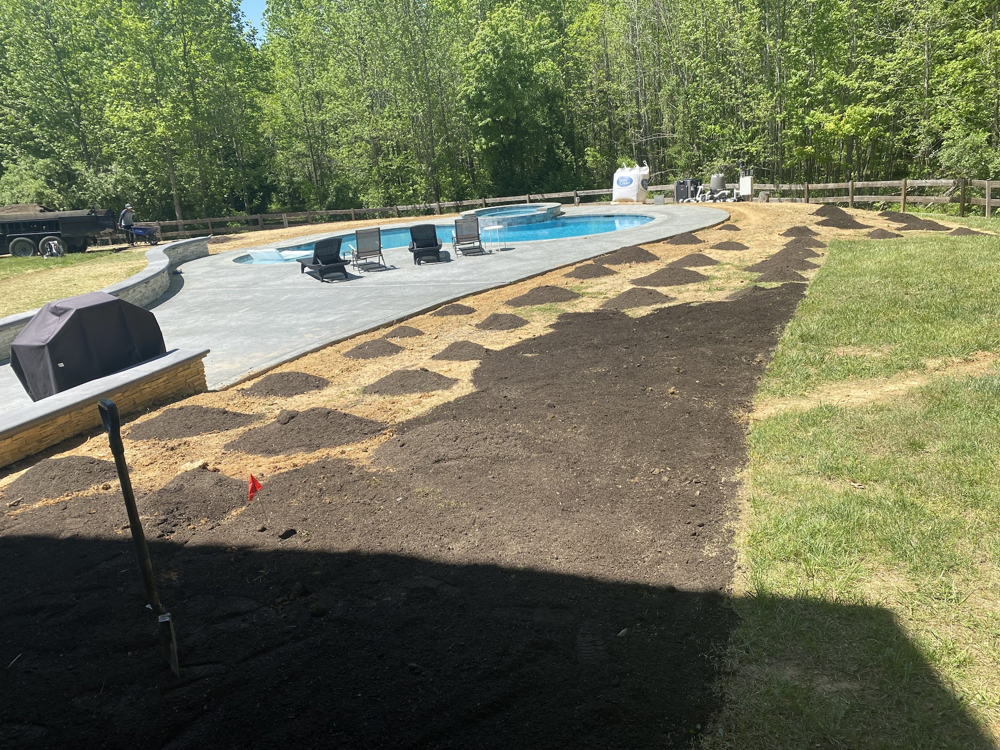
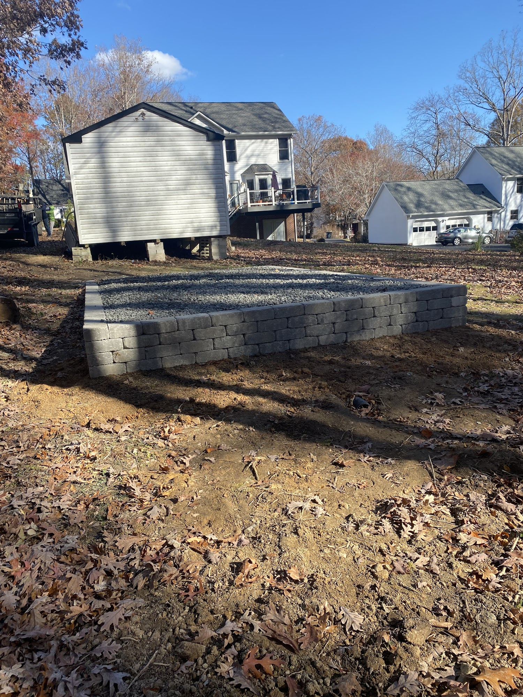
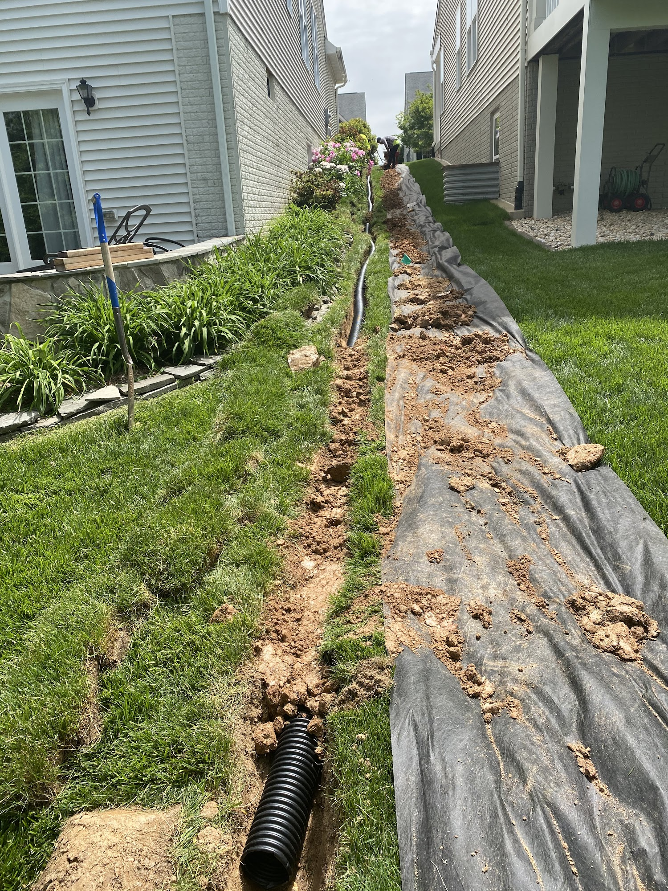
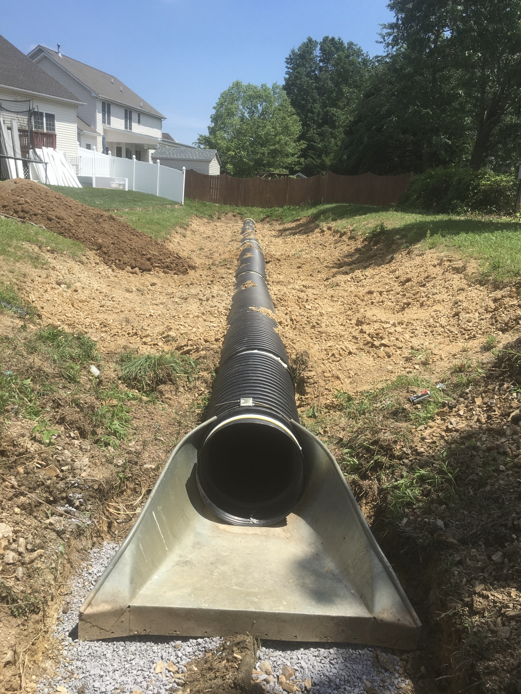
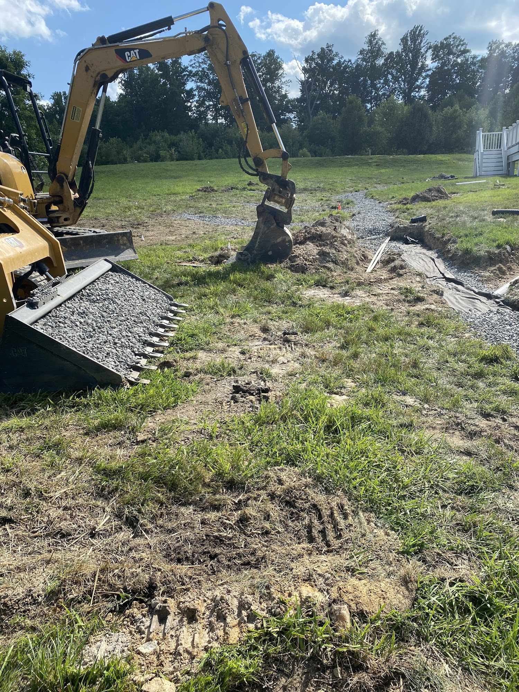
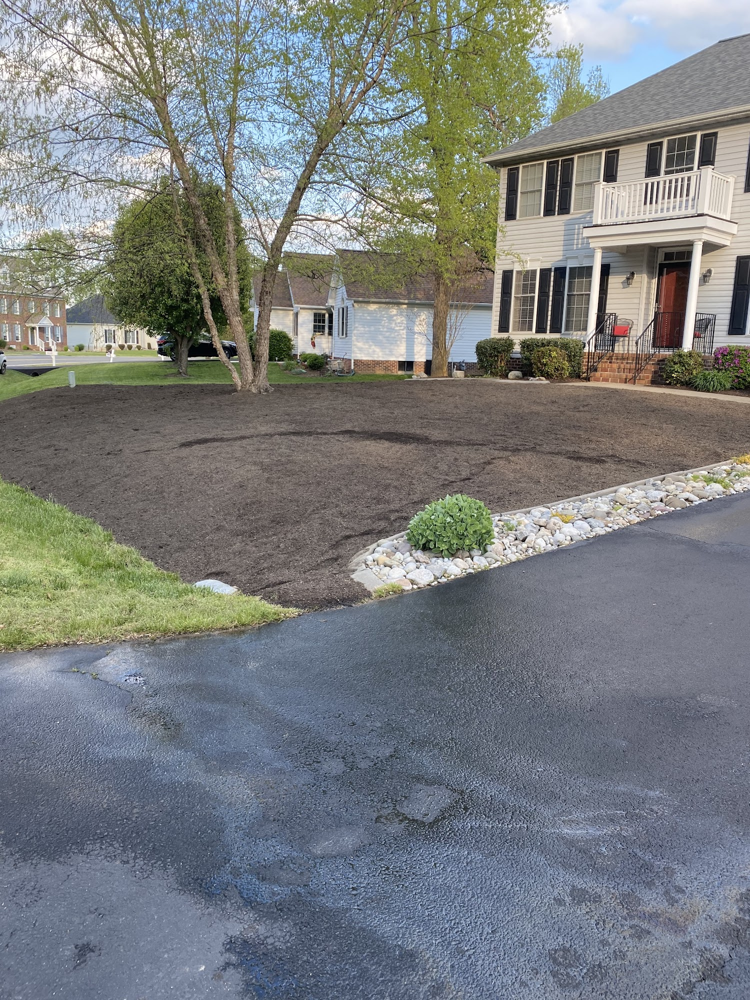
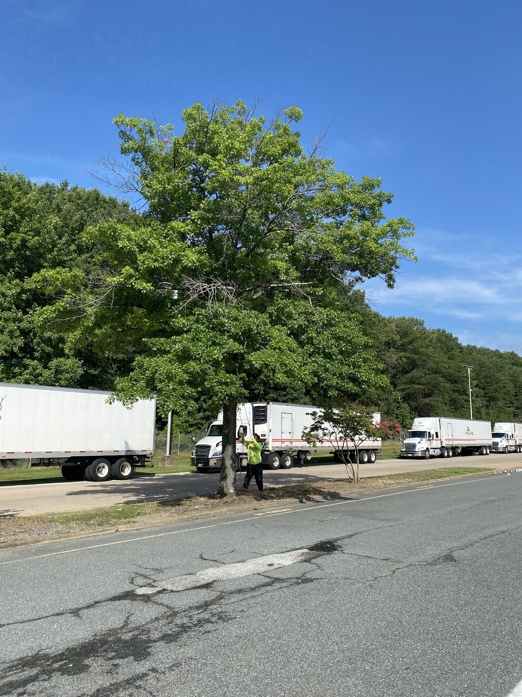
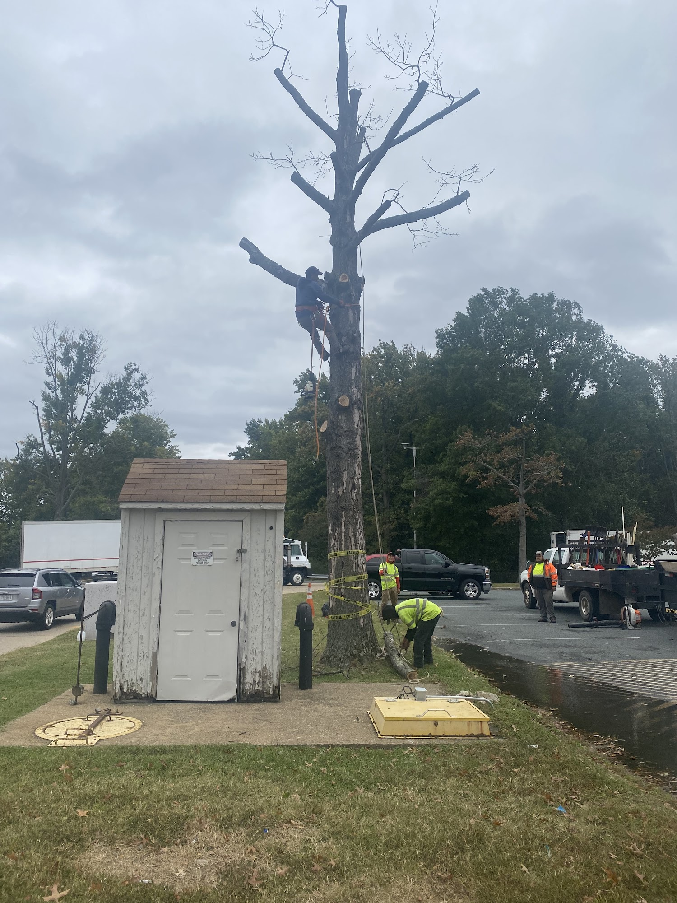

Our work
A closer look at AFM Landscaping & Irrigation projects.
Browse landscaping, irrigation, drainage, retaining wall, cleanup, and seasonal work pulled from the business profile photo gallery.











